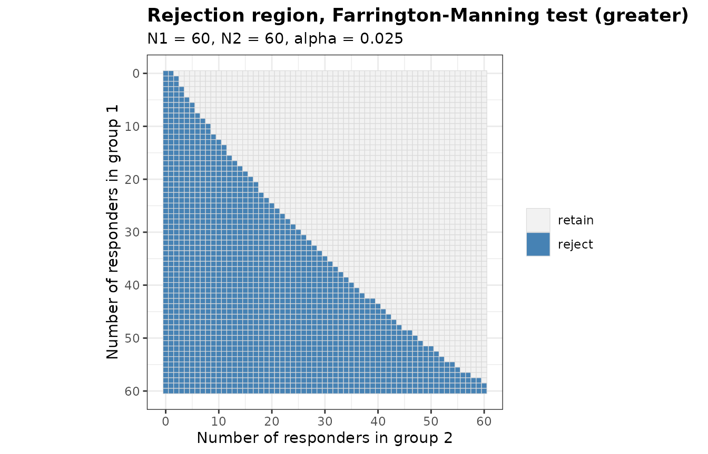
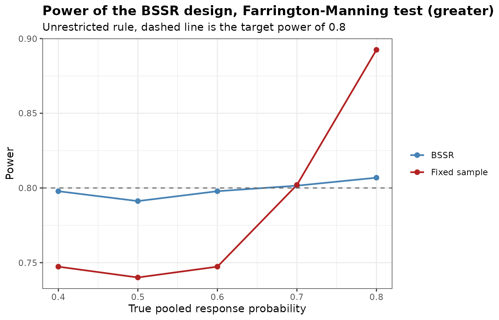
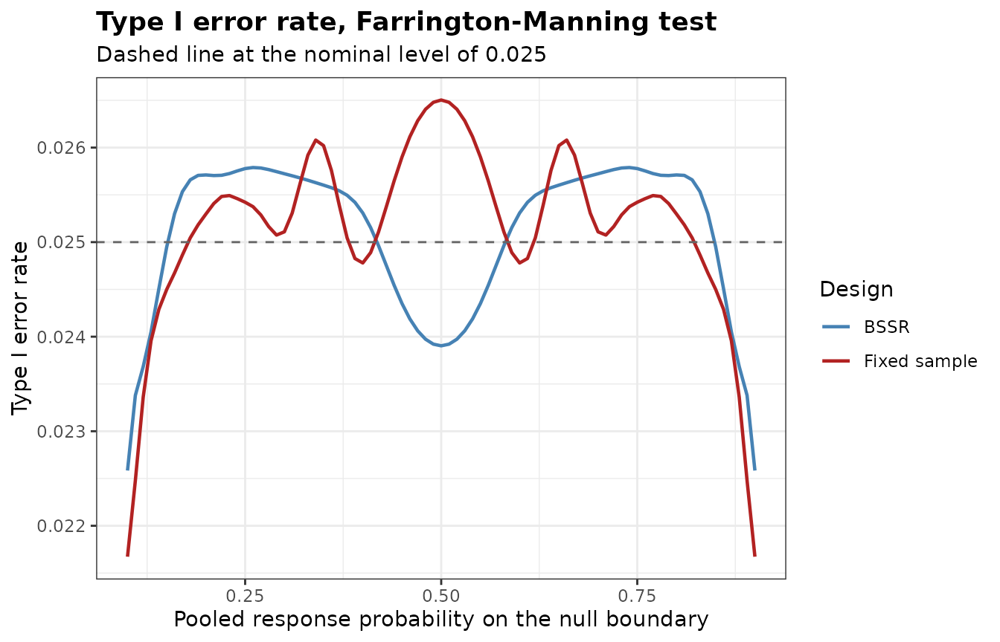
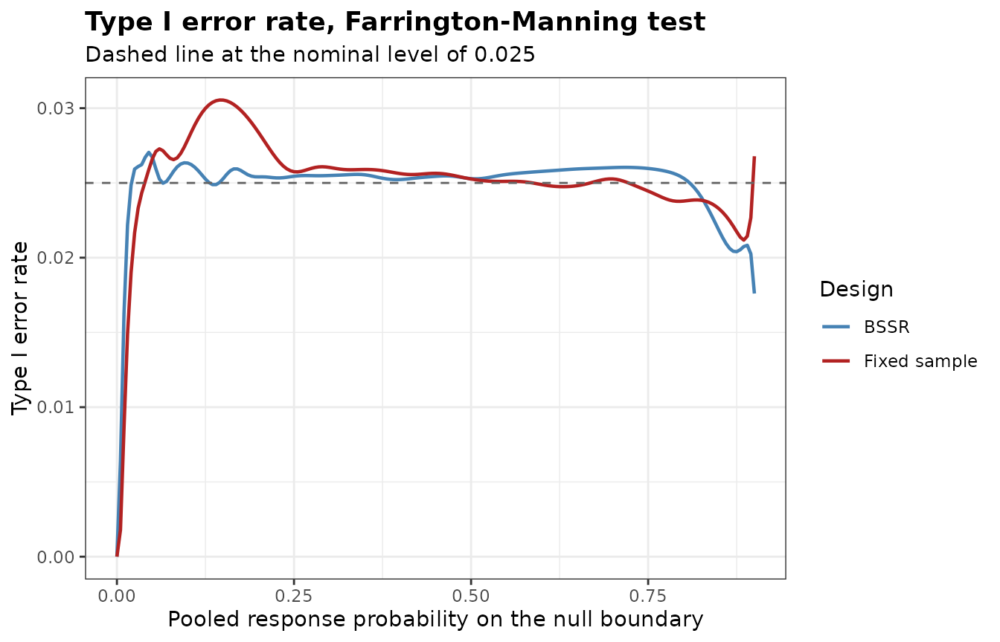

Non-inferiority Trials
Gosuke Homma
2026-10-08
Source:vignettes/bbssr-non-inferiority.Rmd
bbssr-non-inferiority.RmdHypotheses and margin
Let group 1 receive the experimental treatment and group 2 the
control. A non-inferiority trial with a margin
on the scale of the risk difference tests
which corresponds to
alternative = 'greater' and margin = delta.
With alternative = 'less' the null hypothesis is
,
which suits an endpoint for which a lower response probability is
better. A negative margin tests superiority by more than its absolute
value. A margin other than 0 requires one of the two tests below and a
one-sided alternative. The last section covers a margin on the scale of
the risk ratio, margin.scale = 'RR'.
The two tests
Both tests refer
to the standard normal distribution and
reject
when
.
The test of Blackwelder (1982), Test = 'Blackwelder', uses
the standard error at the observed proportions,
The test of Farrington and Manning
(1990), Test = 'Farrington-Manning', uses the same
expression at the maximum likelihood estimates
and
under the restriction
.
With
the Farrington-Manning test is the chi-squared test and the Blackwelder
test is the Wald test.
The two tests are asymptotic, but the package computes their rejection regions, power and sample sizes exactly, as for the other tests.
rr.bw <- BinaryRR(N1 = 60, N2 = 60, alpha = 0.025, Test = 'Blackwelder', margin = 0.1)
rr.fm <- BinaryRR(N1 = 60, N2 = 60, alpha = 0.025, Test = 'Farrington-Manning',
margin = 0.1)
c(Blackwelder = sum(rr.bw), Farrington.Manning = sum(rr.fm))
#> Blackwelder Farrington.Manning
#> 1714 1698
plot(rr.fm)
The size of a test of non-inferiority is its largest rejection probability on the boundary of the null hypothesis. The function below evaluates it over a fine grid of .
boundary_size <- function(RR, margin) {
N1 <- attr(RR, 'N1')
N2 <- attr(RR, 'N2')
m <- matrix(as.vector(RR), N1 + 1L, N2 + 1L)
p2 <- seq(margin + 0.001, 0.999, by = 0.001)
size <- vapply(p2, function(q) {
sum(outer(dbinom(0:N1, N1, q - margin), dbinom(0:N2, N2, q)) * m)
}, numeric(1))
data.frame(p2 = p2[which.max(size)], size = max(size))
}
sizes <- cbind(Test = c('Blackwelder', 'Farrington-Manning'),
rbind(boundary_size(rr.bw, 0.1), boundary_size(rr.fm, 0.1)))
sizes
#> Test p2 size
#> 1 Blackwelder 0.993 0.06067597
#> 2 Farrington-Manning 0.550 0.02730085The nominal level is 0.025. With 60 patients per group the size is 0.0607 for the Blackwelder test, attained at 0.993, and 0.0273 for the Farrington-Manning test. The size of an asymptotic test at a given sample size can lie on either side of the nominal level, so it is worth computing for the sample sizes of a design.
Sample size
With a margin, BinarySampleSize() replaces the
difference in the normal approximation by its distance
from the boundary of the null hypothesis.
method = 'standard' evaluates the variance in the term of
the significance level at the large sample values of the restricted
estimates, which gives formula (4) of Farrington and Manning (1990).
method = 'alternative.variance' uses the variance under the
alternative in both terms, which gives the formula of Blackwelder
(1982). method = 'exact' steps from the formula of
Farrington and Manning, one patient at a time, to the sample size at
which the exact power of the test first attains the target. Below, both
groups have a response probability of 0.7 and the margin is 0.15.
ni.ss <- expand.grid(method = c('exact', 'standard', 'alternative.variance'),
Test = c('Blackwelder', 'Farrington-Manning'),
stringsAsFactors = FALSE)
ni.ss$N <- NA
ni.ss$Power <- NA
for (i in seq_len(nrow(ni.ss))) {
ss <- BinarySampleSize(p1 = 0.7, p2 = 0.7, r = 1, alpha = 0.025, tar.power = 0.8,
Test = ni.ss$Test[i], method = ni.ss$method[i], margin = 0.15)
ni.ss$N[i] <- ss$N
ni.ss$Power[i] <- round(ss$Power, 4)
}
ni.ss
#> method Test N Power
#> 1 exact Blackwelder 292 0.8009
#> 2 standard Blackwelder 292 0.8009
#> 3 alternative.variance Blackwelder 294 0.8024
#> 4 exact Farrington-Manning 290 0.8005
#> 5 standard Farrington-Manning 292 0.8020
#> 6 alternative.variance Farrington-Manning 294 0.8062Power is the exact power of the test at the sample size
of each row, so the rows of the two formulas show how close the normal
approximation comes to the target for each test.
Blinded sample size re-estimation
Friede, Mitchell and Mueller-Velten (2007) re-estimate the sample
size of a non-inferiority trial from the blinded overall response rate,
which is the pooled response probability of the package. The assumed
difference is usually 0, so both recovered probabilities equal the
blinded pooled response probability, and the sample size is re-estimated
by the formula of Farrington and Manning
(ss.method = 'standard') or of Blackwelder
(ss.method = 'alternative.variance'). The design below is
planned for a pooled response probability of 0.7 and re-estimates the
sample size after half of the patients.
plan <- BinarySampleSize(p1 = 0.7, p2 = 0.7, r = 1, alpha = 0.025, tar.power = 0.8,
Test = 'Farrington-Manning', method = 'standard', margin = 0.15)
ni <- BinaryPowerBSSR(
p = seq(0.4, 0.8, by = 0.1), Delta.A = 0, Delta.T = 0,
N1 = plan$N1, N2 = plan$N2, omega = 0.5, r = 1, alpha = 0.025, tar.power = 0.8,
Test = 'Farrington-Manning', ss.method = 'standard', margin = 0.15
)
ni
#> Blinded sample size re-estimation for a binary endpoint
#>
#> Test : Farrington-Manning
#> Alternative : greater
#> Design rule : unrestricted
#> Initial size : N1 = 146, N2 = 146
#> Interim fraction: 0.5, giving n1 = 73 and n2 = 73
#> Treatment effect: assumed 0, true 0 (risk difference)
#> Margin : 0.15
#> Re-estimation : normal approximation (standard), group rounding at level 0.025
#> Alpha : 0.025, target power 0.8
#>
#> p p1 p2 power.BSSR power.TRAD E.N
#> 0.4 0.4 0.4 0.7978 0.7473 329.0
#> 0.5 0.5 0.5 0.7912 0.7401 342.1
#> 0.6 0.6 0.6 0.7978 0.7473 329.0
#> 0.7 0.7 0.7 0.8015 0.8020 290.8
#> 0.8 0.8 0.8 0.8069 0.8925 228.5
plot(ni)
summary(ni)
#> p1 p2 p E.N SD.N N.q25 N.q50 N.q75 P.N.max
#> 1 0.4 0.4 0.4 328.9911 10.868511 322 330 336 4.408925e-02
#> 2 0.5 0.5 0.5 342.0553 3.210567 342 344 344 5.435178e-01
#> 3 0.6 0.6 0.6 328.9911 10.868511 322 330 336 4.408925e-02
#> 4 0.7 0.7 0.7 290.7938 19.451117 278 294 304 8.652446e-06
#> 5 0.8 0.8 0.8 228.4956 24.167543 212 228 244 1.323903e-13The planned total sample size is 292. The variance of a binary endpoint is largest at one half, so the fixed-sample design loses power when the true pooled response probability lies closer to one half than the planning value, and the re-estimation enlarges the trial in that case. At a pooled response probability of 0.4 the power is 0.798 with re-estimation and 0.747 without.
Type I error rate on the boundary
With a margin, BinaryTypeIErrorBSSR() evaluates the type
I error rate on the boundary of the null hypothesis. The boundary is
parametrized by the pooled response probability theta, and
the values at which a response probability falls outside the unit
interval are dropped.
ni.tie <- BinaryTypeIErrorBSSR(
Delta.A = 0, N1 = plan$N1, N2 = plan$N2, omega = 0.5, r = 1, alpha = 0.025,
tar.power = 0.8, Test = 'Farrington-Manning', ss.method = 'standard', margin = 0.15,
theta = seq(0.1, 0.9, by = 0.01)
)
ni.tie
#> Type I error rate of blinded sample size re-estimation for a binary endpoint
#>
#> Test : Farrington-Manning
#> Alternative : greater
#> Initial size : N1 = 146, N2 = 146
#> Interim size : n1 = 73, n2 = 73
#> Assumed effect : 0 (RD)
#> Margin : 0.15
#> Nominal level : 0.025
#> Grid : 81 values of theta in [0.1, 0.9]
#> Maximum : certified over theta in [0.1, 0.9]
#>
#> Largest type I error rate
#> Design theta TIE
#> BSSR 0.261652 0.02579
#> Fixed sample 0.500000 0.02650
plot(ni.tie)
The largest type I error rate is certified over the interval spanned
by theta, here from 0.1 to 0.9. With the default
theta = seq(0, 1, by = 0.005) the interval is the whole
part of the boundary on which both response probabilities lie in the
unit interval, which with an allocation ratio of 1 is theta
from
to
.
The same rejection probabilities follow from
BinaryPowerBSSR() with the true difference on the boundary,
Delta.T = -margin.
on.boundary <- BinaryPowerBSSR(
p = c(0.5, 0.7), Delta.A = 0, Delta.T = -0.15,
N1 = plan$N1, N2 = plan$N2, omega = 0.5, r = 1, alpha = 0.025, tar.power = 0.8,
Test = 'Farrington-Manning', ss.method = 'standard', margin = 0.15
)
rows <- vapply(c(0.5, 0.7), function(t) which.min(abs(ni.tie$theta - t)), integer(1))
max(abs(on.boundary$power.BSSR - ni.tie$TIE.BSSR[rows]))
#> [1] 0BinaryAlphaAdjBSSR() accepts the margin in the same way
and adjusts the nominal level on the boundary.
Margin on the scale of the risk ratio
With margin.scale = 'RR' the margin is a ratio
,
and alternative = 'greater' tests
With alternative = 'less'
the null hypothesis is
,
as in the second example of Farrington and Manning (1990), where the
relative risk of pertussis among recipients of an acellular vaccine
compared with those of a whole cell vaccine is to be shown to be below
1.5. A margin on this scale also requires one of the two tests and a
one-sided alternative, and in the functions with re-estimation the
assumed and the true effects are then risk ratios
(effect = 'RR').
Both tests refer statistic (5) of Farrington and Manning (1990), to the standard normal distribution. The Blackwelder test takes and , which is Method 1 of the article. The Farrington-Manning test takes the maximum likelihood estimates under the restriction . With , the estimate is the smaller root of formula (13) of the article, and . With the restricted estimates are the pooled proportion, so the Farrington-Manning test is the chi-squared test.
rr.ratio <- BinaryRR(N1 = 60, N2 = 60, alpha = 0.025, Test = 'Farrington-Manning',
margin = 0.8, margin.scale = 'RR')
rr.one <- BinaryRR(N1 = 60, N2 = 60, alpha = 0.025, Test = 'Farrington-Manning',
margin = 1, margin.scale = 'RR')
rr.chisq <- BinaryRR(N1 = 60, N2 = 60, alpha = 0.025, Test = 'Chisq')
c(ratio.0.8 = sum(rr.ratio), ratio.1 = sum(rr.one), chisq = sum(rr.chisq))
#> ratio.0.8 ratio.1 chisq
#> 1727 1355 1355
identical(as.vector(rr.one), as.vector(rr.chisq))
#> [1] TRUEBinarySampleSize() replaces the difference in the normal
approximation by the distance
from the boundary, or
for alternative = 'less'. With the allocation ratio
the size of group 2 is
where
is the target power and
is the same expression at the large sample values of the restricted
estimates. method = 'standard' gives formula (8) of
Farrington and Manning (1990), and
method = 'alternative.variance', which sets
,
gives the formula of their Method 1. The table below repeats the
comparison of the sample sizes for equal response probabilities of 0.7
and the margin 0.8.
rr.ss <- expand.grid(method = c('exact', 'standard', 'alternative.variance'),
Test = c('Blackwelder', 'Farrington-Manning'),
stringsAsFactors = FALSE)
rr.ss$N <- NA
rr.ss$Power <- NA
for (i in seq_len(nrow(rr.ss))) {
ss <- BinarySampleSize(p1 = 0.7, p2 = 0.7, r = 1, alpha = 0.025, tar.power = 0.8,
Test = rr.ss$Test[i], method = rr.ss$method[i], margin = 0.8,
margin.scale = 'RR')
rr.ss$N[i] <- ss$N
rr.ss$Power[i] <- round(ss$Power, 4)
}
rr.ss
#> method Test N Power
#> 1 exact Blackwelder 278 0.8022
#> 2 standard Blackwelder 284 0.8085
#> 3 alternative.variance Blackwelder 276 0.7993
#> 4 exact Farrington-Manning 282 0.8036
#> 5 standard Farrington-Manning 284 0.8047
#> 6 alternative.variance Farrington-Manning 276 0.7946The second example of Farrington and Manning (1990), with
,
,
alternative = 'less', the one-sided level 0.025 and the
power 0.9, needs 12,890 patients per group by formula (8), and its true
power is 90.4 per cent. The rejection region at this sample size has
more than
outcomes, so inst/reproduce/reproduce-published.R sums the
exact power over the outcomes that carry the probability, and reproduces
both values together with Tables I and II of the article.
The re-estimation of Friede, Mitchell and Mueller-Velten (2007)
carries over with the assumed ratio Delta.A = 1, which
recovers the pooled proportion for both groups. The design below is
planned for a pooled response probability of 0.7, re-estimates the
sample size by formula (8) after half of the patients, and allows at
most twice the planned sample size.
plan.rr <- BinarySampleSize(p1 = 0.7, p2 = 0.7, r = 1, alpha = 0.025, tar.power = 0.8,
Test = 'Farrington-Manning', method = 'standard',
margin = 0.8, margin.scale = 'RR')
ni.rr <- BinaryPowerBSSR(
p = seq(0.4, 0.8, by = 0.1), Delta.A = 1, Delta.T = 1,
N1 = plan.rr$N1, N2 = plan.rr$N2, omega = 0.5, r = 1, alpha = 0.025, tar.power = 0.8,
Test = 'Farrington-Manning', effect = 'RR', ss.method = 'standard',
N.max = 2 * plan.rr$N, margin = 0.8, margin.scale = 'RR'
)
ni.rr
#> Blinded sample size re-estimation for a binary endpoint
#>
#> Test : Farrington-Manning
#> Alternative : greater
#> Design rule : unrestricted
#> Initial size : N1 = 142, N2 = 142
#> Interim fraction: 0.5, giving n1 = 71 and n2 = 71
#> Treatment effect: assumed 1, true 1 (risk ratio)
#> Margin : 0.8 (risk ratio)
#> Re-estimation : normal approximation (standard), group rounding at level 0.025, N.max = 568
#> Alpha : 0.025, target power 0.8
#>
#> p p1 p2 power.BSSR power.TRAD E.N
#> 0.4 0.4 0.4 0.5812 0.3375 568.0
#> 0.5 0.5 0.5 0.7441 0.4653 555.9
#> 0.6 0.6 0.6 0.8021 0.6240 433.6
#> 0.7 0.7 0.7 0.8081 0.8047 286.5
#> 0.8 0.8 0.8 0.8212 0.9497 179.5At equal response probabilities the distance from the boundary is , so it shrinks with , and a lower pooled response probability calls for more patients. The planned total sample size is 284. At a pooled response probability of 0.4 the expected total sample size of the re-estimation design is 568.0, close to the upper bound of 568, and the power is 0.581 with re-estimation and 0.337 without.
On the boundary
the pooled response probability is
,
and both response probabilities are linear in
,
so BinaryTypeIErrorBSSR() certifies the largest type I
error rate as on the scale of the risk difference. With the default
theta the interval runs from 0 to
,
at which the larger response probability reaches 1.
tie.rr <- BinaryTypeIErrorBSSR(
Delta.A = 1, N1 = plan.rr$N1, N2 = plan.rr$N2, omega = 0.5, r = 1, alpha = 0.025,
tar.power = 0.8, Test = 'Farrington-Manning', effect = 'RR', ss.method = 'standard',
N.max = 2 * plan.rr$N, margin = 0.8, margin.scale = 'RR'
)
attr(tie.rr, 'interval')
#> [1] 0.0 0.9
attr(tie.rr, 'max')
#> Design theta TIE bound
#> 1 BSSR 0.04517183 0.02704639 0.02704639
#> 2 TRAD 0.14697132 0.03055082 0.03055082
plot(tie.rr)
The largest type I error rate is 0.0270 for the re-estimation design,
at
0.045, and 0.0306 for the fixed-sample design, at
0.147. Both exceed the nominal level of 0.025, and the fixed-sample
design exceeds it by more, so the excess comes from the asymptotic test
rather than from the re-estimation. BinaryAlphaAdjBSSR()
accepts margin.scale in the same way and lowers the nominal
level until the rate is controlled.
References
Blackwelder, W. C. (1982). “Proving the null hypothesis” in clinical trials. Controlled Clinical Trials, 3, 345-353.
Farrington, C. P. and Manning, G. (1990). Test statistics and sample size formulae for comparative binomial trials with null hypothesis of non-zero risk difference or non-unity relative risk. Statistics in Medicine, 9, 1447-1454.
Friede, T., Mitchell, C. and Mueller-Velten, G. (2007). Blinded sample size reestimation in non-inferiority trials with binary endpoints. Biometrical Journal, 49, 903-916.